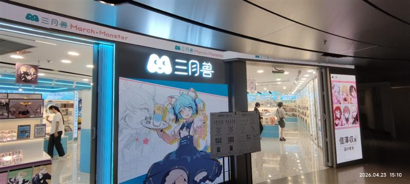
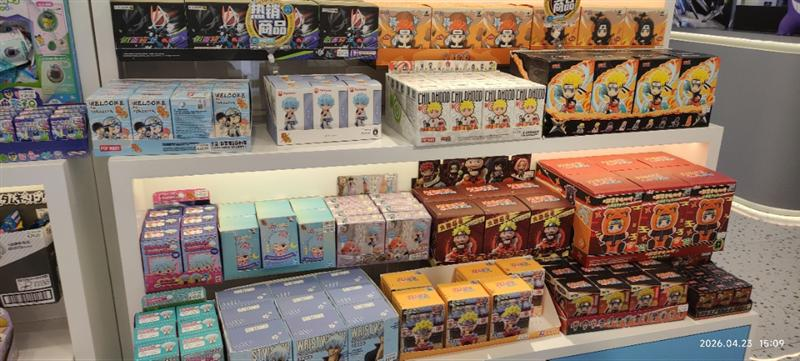
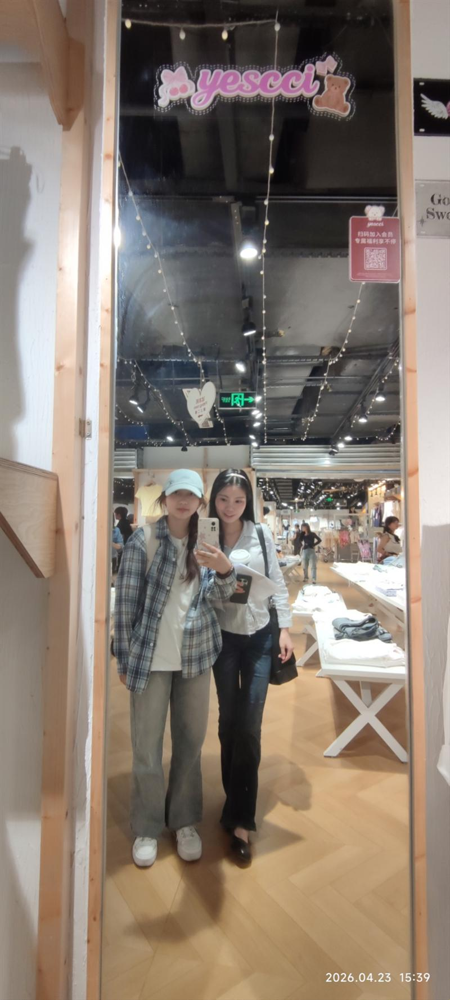
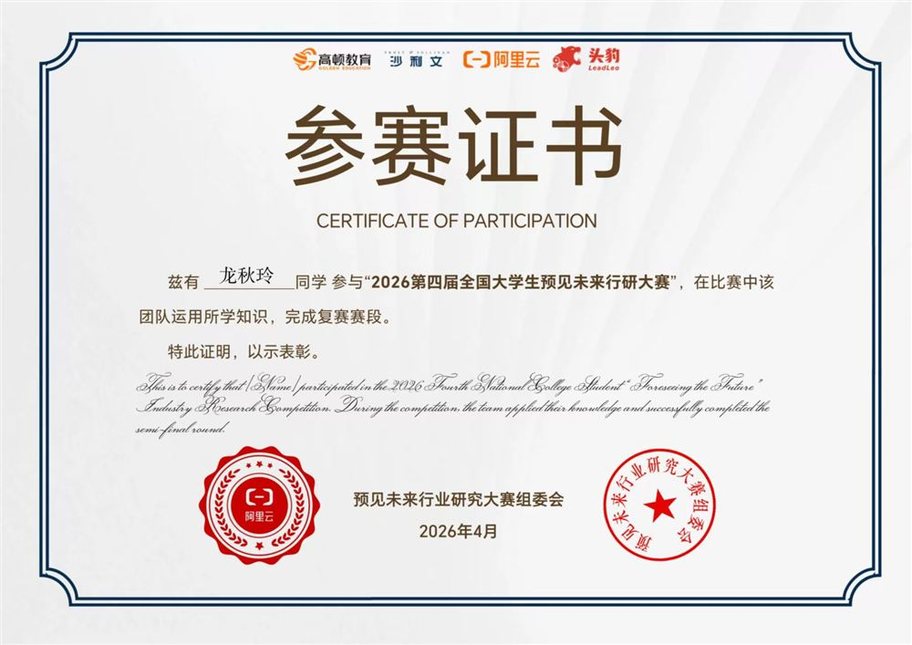

youtube
抖音
记事本
回收站
> 大一的时候学过一阵子手语
> 手指动的时候在想一件事
> 说不出嘴的话要怎么被人接住
> 后来做项目、学AI、写东西
> 好像一直在回答这同一个问题
status: learning ♥ fps: 24我是龙秋玲，重庆工商大学市场营销专业在读，也是一个AIGC实践者、AI工作流建设者。
对我来说，做项目、搭工作流、写东西，都是同一件事——用我能想到的方式，跟这个世界对话，也接住那些说不出嘴的话。
认识乾坤的路上，犹怜草木青。世界宽阔，总是在路上，慢慢学，慢慢做。
> AIGC实践者 · AI工作流建设者
> 做项目、搭工作流、写东西
> 都是跟世界对话的方式
state: building ♥ mem: ok项目负责人，承接学院专项任务，独立推进方案设计、师生访谈调研、需求整理与整套培养方案撰写落地。
▸ 点击查看详情
团队队长，带队从0到1完成行业研究，用AI辅助Python数据清洗与行业分析，零基础自主攻坚。
▸ 点击查看详情
北辰青年实习产出，设计5步人机协作工作流，明确"人做判断、AI做分析"的边界，已用真实岗位测试验证。
▸ 点击查看详情
从零基础自主学习AI智能体搭建、自动化工作流设计，把AI从"工具"升级为"可复用的工作流"。
▸ 点击查看详情
26个部分的完整战略推演，从"账号为什么存在"到品牌宪法、长期系统设计，核心是减少信息差。
▸ 点击查看详情
已上线，面向新生的校园信息导航，把复杂信息整理成能行动的方法。
▸ 点击查看详情
已上线，为老师定制的个人展示网站。
▸ 点击查看详情
从重庆"四公里站"站名切入抗日战争运输坐标，到渣滓洞红岩信仰，已公开演讲。
▸ 点击查看详情
基于一线实践观察（做校园账号 + 卖校园卡 + 评论区）形成的校园招募洞察，覆盖消费、社交、学习、职业焦虑等维度，形成可落地的用户画像与商业建议。
▸ 点击查看详情
在AI时代重新定义"我是谁"的个人说明书，从能力图谱、工作风格到价值观，系统梳理个人定位与优势。
▸ 点击查看详情
一些理解世界的瞬间，随手记下
凌晨三点零六分 · 写给正在难过的你
🥤 睡到一半起来喝水，习惯性看了一下消息，QQ访客最近多了很多学弟学妹，还有一些久不联系的朋友。偶尔会在凌晨两点到六点，或是下午两点半这样的时间，收到一些克制又有礼貌的信息："那个……希望没有打扰到学姐""我真的很难过，怎么会考得这么糟糕，到底要怎么办？"
🍀 坦白来讲，我没有想到大家会选择向我提问这些问题。我是一个很普通的人，随着年岁增加越来越普通。从前成绩好像可以作为一个等次衡量，划出三六九等；慢慢上了大学才感受到，成绩的衡量性越来越低，而真正的"筛选作用"越来越明显。
高考失利很难过是真的，更难过的也许是这背后对自我价值的怀疑。所以，先给你一个拥抱——高考很累，这段时间你一定也不太容易，辛苦了。
我个人对高考的理解是：社会需要一套相对公平、大规模、可操作的"筛选"机制，决定我们先进"哪一个门"——也许是继续升学，也许是直接就业。但绝对不是就此"衡量"出谁更有价值、谁更值得拥有更好的未来。
世界上没有完美的系统，高考这套"筛选"系统也有陷阱🕳️：它带来的优绩主义，会让你误以为失败全是自己的错。社会长久以来传递一种信念——只要你足够努力就能成功；反过来说，没成功就是不够努力。这套逻辑最残酷的地方在于，它让赢家相信成功全凭实力，也让输家相信失败全因自己不够好。它完全遮蔽了运气、出身、家庭资源、地区教育资源、甚至考试当天身体状况的作用。
就像我们种了一百棵树🌲，眼睛看到了最高的一棵，但不能说明剩下的九十九棵就应该被砍掉。在眼睛看不到的地方，这九十九棵树的根系之发达，未必逊色于那棵"高佬树"。
高考是一种交通：考得好的人像上了高铁，快、直达，但票价贵，且一旦上错车（选错不适合的专业）不好调头；没考好的人像是下了高铁需要换乘——还有绿皮火车（专升本）、长途汽车（职业教育）、骑行（创业、自由职业）、甚至先打工攒钱再买下一段车票（工作后继续深造）。
漫长的人生里，我们只是在18岁这个节点用了不一样的通行方式而已。公办专科的好专业有学前教育、护理、口腔医学技术、数字媒体、老年服务与管理（朝阳产业），这些学的是真本事，就业率不低；专升本很多省份比例不低，只考专业课和英语，压力远小于高考。
如果你有一双巧手，或对某样事物有特别的喜爱——烘焙、园艺、宠物美容、电商运营、非物质文化遗产手艺……这些路不需要高学历，但需要热爱和持续精进。花一点时间去了解它们，可以问大模型，也可以问B站、抖音、学校老师。
命运不会把一个真诚的人拒之门外。
💰 复读没有错，不读或者读专科本科也没有错，不要怕觉得给家人造成负担就擅自决定。如果想复读，坐下来好好评估真实可行性，和家里算一笔完整开销：学费、资料费、生活费；同时客观看这次失利是发挥失常，还是本身基础薄弱、厌学——要是极度畏惧高三节奏，强行复读只会心态崩盘。
如果要读下去，可以问学校资助办和当地政府，甚至联系妇联：生源地助学贷款怎么申请？大学有绿色通道吗？国家励志奖学金需要什么条件？周末和假期可以怎么兼职？不要一个人扛着"拖累全家"的负罪感，把它变成可以一步步解决的具体财务问题。
这是一个充满不确定性的时代，AI和时代不停发展，刚刚跨出校门从题海里抬头，我们当然会更加迷茫惶恐。还好，不确定性也意味着更多的可能性。
不用逼迫自己两天内立刻消化所有崩溃，允许自己难过、逃避、短暂停滞。
分数只能定格一场考试，永远无法定格你的人生。
感知、思考、扛住困境的韧性，是不确定时代里永远确定、不会失效的力量。
晚安 ♡
如果你也在认识世界的路上，或者想聊聊AI、文学、青年成长——
屏幕这一头的小窗口，一直开着。
> 邮箱：2050164148@qq.com
> 微信：DYWE330
> 小红书 / 抖音：CTBU一只喵
waiting for hello _我对什么感兴趣：AI工作流 · 品牌战略 · 文学创作 · 青年成长 · 市场营销
欢迎什么样的连接：前辈的指导 · 同辈的交流 · 项目合作 · 实习机会
一些祝愿：期待我们带着共同的初衷和向往，发起有意义的沟通和探讨，在此产生一次又一次有重量的对话与协作✨
2026.1.19 ~ 2026.2.14 · 返家乡社会实践
工作内容：在彭老师等多位实习老师的指导下，参与财政票据整理、经费报表核对、多类数据录入等工作；协助处理日常电话咨询，倾听群众关于政策、办学条件的诉求。通过处理具体账目，理解财政拨付与民生保障的紧密联系；通过接听热线，直观感受基层群众的教育期盼。实践期间参与南区各幼儿园、小学、中学票据的归档与核对工作；日均接听群众来电 3–4 通，持续一个多月，获得单位带教老师肯定。
左：日常处理的财务文件｜右：实习工作照
重庆工商大学2026年寒假社会实践鉴定表 · 钦南区教育局盖章
实习收获：
第一次走进政府机关，真实体验了行政工作的严谨与规范。学会了财务档案的分类整理方法，培养了细致耐心的工作习惯。理解了基层教育部门的运作逻辑，对"体制内"工作有了更立体的认知。
这段经历让我明白，任何看似琐碎的工作，都有其不可替代的价值——那些被认真归档的文件、被仔细核对的数字，背后是整个教育系统的平稳运转。
2026.7 - 2026.8 · AI时代青年成长项目
📋 工作内容：
• 产出《AI时代个人说明书》，系统梳理个人能力与协作方式
• 产出校园招募洞察报告，深度分析Z世代校园用户需求
• 制作50+张校园内容卡片，覆盖新生攻略、学习方法、校园生活等主题
• 开发求职面试AI Skill，助力大学生面试准备
• 担任训练营面试官，参与候选人选拔与评估
🔄 完整工作流路径：
接收任务（老师给方向 + 飞书文档步骤指引）→ 结合一线实践独立思考 → 产出初稿 → 小组会讨论分工 → 协作执行 → 复盘
个人任务我会先照文档步骤走，但不照搬。比如做校园招募时，我把自己在卖校园卡一线真正碰到的问题和痛点融进去，再形成自己的判断——不是把指令执行完就交差。
📜 实习实践证书：
北辰青年创始人CEO 宋超 签发
✉️ 实习结业后保荐信：
腾讯云AI校园大使项目 · 个人保荐资格 · 24小时内回复
💡 实习收获：
过去，AI于我而言，是云端之上一个遥远而模糊的概念；学完之后，它成了我手中具体可感的工具。我忽然意识到，表达与对话原来可以突破语言的边界——用代码，这种全新的语法，去和世界交流。
作为市场营销专业的学生，我做了一个“不务正业”的决定：去学计算机，去亲手搭建一个网站。当页面真正在浏览器里跑起来的刹那，感觉到自己好像个现代魔法师——不必依赖现成的魔杖，仅凭清晰的逻辑和准确的表达，就能在虚无之中构建出实体。
这段经历重塑了我对很多事情的认知：关于个人潜力的边界，关于与世界交互的方式，关于如何真正帮朋友解决实际问题。我更加确信，学习本身就是一种勇敢。它允许你跨过专业的栅栏，去摘取属于任何领域的星光。
大一寒假起 · 趣味阅读 · 四年级一个班 50 余人
📋 工作内容：
• 独立完成备课、授课、课堂互动、课后复盘全流程
• 长期开展公开授课，为乡村孩子提供优质教育资源
• 通过云课堂平台，跨越地域限制，让教育没有距离
• 与孩子互动交流，激发学习兴趣，陪伴成长
🔄 完整授课流程：
需求沟通 → 课程设计 → 备课准备 → 云端授课 → 课堂互动 → 课后复盘 → 持续优化
科目：趣味阅读｜对象：四年级一个班，50 多人｜频率：原计划一学期每周一节
实际情况：偏远地区网络设备不稳定，对方小学那边常出问题，多次被迫停课，满打满算只上了 2–3 节课。
备课：提前备课、做 PPT、与助学老师反复沟通，沟通成本比较高。
📜 岗前培训通过证书：
2026-02-27 · 北京童年一课助学发展中心 签发
💡 支教收获：
有个孩子在下课后问我：「老师，你明天还来吗？」
那一刻我特别受触动——原来有人真的在期待我的到来。
所以我讲趣味阅读的时候，会有意识地放一些动物世界的科普视频，还有「为什么要刷牙」这类十万个为什么。我希望带给他们的不只是知识，还有生活里真正用得上的东西。很多农村的孩子长大以后第一件事就是去补牙，其实是因为小时候没有人好好讲过这些。
我希望教育是平等的。不是说大家用的书一样就是平等，而是让教育的花开在每一个人的手里面——那才是真正的公平。
带队从0到1完成潮流盲盒玩具行业研究，以"产品与用户研究视角"切入。负责团队分工、进度管理与任务统筹。自主学习并运用AI智能体搭建、自动化工作流，辅助完成Python数据清洗与行业分析。通过实地考察、用户调研与数据分析，产出完整的行业研究报告，成功晋级复赛。



